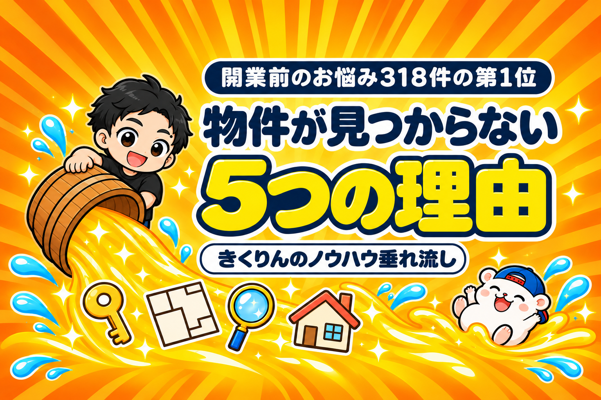

レンタルスペースを始めたい人の悩みを、318件集めてみました。
いちばん多かったのは、「物件が見つからない」 でした。
- 不動産屋さんに何社聞いても、使える物件が少ない
- 「レンタルスペースで」と正直に言うと、断られる
- 使い道をぼかして契約していいのか、迷っている
- 本を読んで探し始めたけれど、まだ見つからない
どれも、あなただけではありません。
レンタルスペースは、大家さんに嫌がられやすい商売です。
だから、見つからないのがふつうです。
結論から書きます。
見つからない人の探し方には、5つの共通点があります。
逆に言えば、この5つを直すだけで、見える物件の数が変わります。
- 条件を、最初からしぼりすぎている
- 業種で、検索をしぼっている
- 「店舗・事務所」しか見ていない
- 1回検索して、終わりにしている
- 1人で探している
1つずつ、何をすればいいかとセットで書きます。
この記事を書いた人
この記事は、23店舗ぶんの物件を探して借りてきたきくりんが書いています。
いまも、保存した検索条件で、新しい物件を毎週見ています。
開業前のお悩み、第1位は「物件」だった
| 順位 | 開業前のお悩み | 件数 | 出てきた場所 |
|---|---|---|---|
| 1位 | 物件(見つからない・この物件で大丈夫か) | 48件 | 8か所すべて |
| 2位 | 何から始めればいいか分からない | 39件 | 8か所すべて |
| 3位 | 本当にもうかるのか | 23件 | 8か所すべて |
| 4位 | ジャンルは何がいいか | 18件 | 7か所 |
| 5位 | この場所に需要はあるか | 14件 | 7か所 |
物件の48件のうち、36件が「見つからない・探し方が分からない」でした。
調べた場所は8か所・318件
| 調べた場所 | 件数 | 時期 | 中身 |
|---|---|---|---|
| Yahoo!知恵袋 | 78件 | 2009〜2026年(2020年以降が51件) | 開業を考えている人の質問 |
| 運営者どうしのコミュニティ(3つ) | 62件 | 2025年1月〜2026年9月 | これから始める人の質問と、先輩の後悔 |
| Googleの検索候補 | 48件 | 2026年11月 | 「レンタルスペース 開業」などで出てくる言葉 |
| ポータルサイトの掲載者向けFAQ | 40件 | 2026年11月 | インスタベースなど5社が、先回りして答えている質問 |
| ココナラなどの開業相談 | 35件 | 2026年11月の掲載 | お金を払ってでも聞きたい相談 |
| Amazonの本のレビュー | 23件 | 2019〜2026年 | 開業の本 約20冊の「ここが知りたかった」 |
| YouTubeのコメント | 22件 | 2026年11月に読んだもの | 開業・副業の動画30本のコメント |
| X | 10件 | 2023〜2026年 | これから始める人の投稿と、ぼくへのリプ |
数え方は、3つだけ決めました。
- 数えたのは、まだ開業していない人の悩みだけ(運営中の人の悩みは数えない)
- 同じ人が同じ悩みを何度書いても、1件
- 順位は件数だけでなく、何か所で出てきたかと、本気度(金額や期間まで書いてある声)もあわせて決めた
318件のうち、これから始める人の悩み308件で順位をつけました。
残りの10件は、先輩の「始める前に知りたかった」という声です。
どこで集めても、物件の悩みは上のほうに来ます。
知恵袋でも、本のレビューでも、運営者どうしの会話でも、物件の話が出てきました。
なぜ、物件はこんなに見つからないのか。
大家さんの側から見ると、理由が分かります。
大家さんがレンタルスペースを嫌がる理由
大家さんの心配は、だいたい3つです。
- 知らない人が出入りして、うるさくならないか
- 人がいない部屋で、何かあったらどうするのか
- ふつうの事務所として借りてもらうほうが楽
さらに、あなたの側にも条件があります。
レンタルスペースの物件は、3つがそろわないといけません。
- 用途: レンタルスペースとして借りられるか
- 条件: 駅から何分・広さ・家賃が合っているか
- 収益性: そこで、ちゃんと利益が出るか
この3つが全部そろう物件は、めったに出てきません。
だから、探し方で差がつきます。
逆に言うと、物件が見つかれば、開業の8割は終わったようなものです。
理由1: 条件を、最初からしぼりすぎている
| しぼりすぎの条件 | 広げた条件 |
|---|---|
| 家賃8万円以下 | 予算+2〜3万円まで |
| 駅から徒歩5分以内 | 徒歩10分まで |
| 25㎡以上・1階だけ | 広さと階は少しゆるめる |
最初から条件をしぼると、出てくる物件は0件か、数件です。
これで「いい物件がない」とあきらめてしまう人が多いです。
まずは、広く出してください。
家賃は予算より2〜3万円上まで、駅からの距離は徒歩10分まで広げます。
広げた物件を、そのまま借りるわけではありません。
出てきた物件ごとに、「1日何時間の予約で黒字になるか」を計算して、残すかどうかを決めます。
家賃が少し高くても、予約の入りやすい場所なら、残る物件が出てきます。
理由2: 業種で、検索をしぼっている
不動産のポータルサイトには、業種でしぼる機能があります。
「アミューズメント」や「スタジオ・ホール」です。
これは使わないでください。
しぼると、載っている物件の9割以上が消えます。
ふつうの「事務所」「店舗」の物件でも、聞いてみると「その使い方ならいいですよ」と言われることは、よくあります。
業種は指定せずに探す。
よさそうな物件を選んでから、「レンタルスペースとして使えますか」と1件ずつ聞く。
この順番です。
理由3: 「店舗・事務所」しか見ていない
| 見る場所 | よいところ |
|---|---|
| 店舗・事務所 | 物件の数がいちばん多い |
| 住居の「事務所可」 | 家賃と初期費用が安め |
| すでにレンタルスペースが入っている建物 | 大家さんが一度OKしている |
レンタルスペースの物件は、「店舗・事務所」で探す人がほとんどです。
ここだけ見ていると、ほかの人と同じ物件を取り合うことになります。
ほかに、2つの場所があります。
1つめは、ふつうの賃貸マンションの「事務所可」の部屋です。
家賃も初期費用も、店舗の物件より安めです。
1人で使うワークスペースや、少人数の撮影スタジオなら、OKが出やすいです。
2つめは、すでにレンタルスペースが入っている建物です。
スペースマーケットやインスタベースなどのポータルサイトには、住所が出ています。
その建物で空きが出ていれば、大家さんは一度OKを出しているので、話が早いです。
理由4: 1回検索して、終わりにしている
| 件数 | |
|---|---|
| 1回の検索で出た物件 | 532件 |
| 同じ部屋をまとめると | 347室 |
| 約3週間で入ってきた新着 | 43件 |
| 約3週間で消えた物件 | 24件 |
物件は、毎週入れかわります。
今日いい物件がなくても、来週には出てくるかもしれません。
例えば、ぼくの検索条件では、1回で532件(同じ部屋をまとめて347室)が出ました。
約3週間あとにもう一度見ると、新着が43件、消えた物件が24件ありました。
だから、検索条件は保存しておきます。
新着の通知が来るようにして、毎日、新着の順に見ます。
この「毎日見る」は、AIに任せることもできます。
保存した条件で定期的に探して、新着を拾ってもらうやり方です。
ただし、ポータルサイトによっては、AIの自動操作が規約で禁止されていることがあります。
使うかどうか・どこまで任せるかは、各サービスの規約を確認したうえで、自己責任でお願いします。
AIに任せる手順は、こちらに書きました。

理由5: 1人で探している
| 問い合わせに書く4つ | 中身 |
|---|---|
| あいさつ | 名前・会社名や屋号 |
| 使い方 | レンタルスペース(撮影スタジオ・貸し会議室など) |
| 実績 | もうやっていれば店の数(なければ書かなくていい) |
| 内見 | 使い方がOKなら内見したい |
物件探しは、数の勝負です。
30件問い合わせて、1件内見できれば良いほうです。
この数を、1人でこなすのは大変です。
だから、2つのことをします。
1つめは、問い合わせを型にすることです。
上の4つを書いた文を1回作って、コピーして使います。
電話より、メールのほうが、夜でも送れて記録も残ります。
使い方は、正直に書いてください。
ぼかして契約すると、内見や契約のあとで「レンタルスペースはだめ」と言われることがあります。
内装や契約にかけたお金が、まるごとむだになります。
2つめは、不動産屋さんに味方になってもらうことです。
問い合わせを続けていると、返事が早くて親身な担当者さんに出会います。
特に、個人や少人数でやっている不動産屋さんは、熱心に動いてくれることが多いです。
そういう担当者さんに、エリアと条件を伝えておきます。
不動産会社だけが見られる物件のデータベース(レインズ)から、ポータルサイトに出る前の物件を教えてもらえることもあります。
物件の見極め方と、問い合わせから契約までの手順は、教科書の第2部にまとめています。
記事の最後にリンクを書いておきます。
まとめ: 物件が見つからないときの5つのチェック
開業前のお悩みの第1位は、「物件が見つからない」でした。
見つからないのは、あなたのせいではありません。
レンタルスペースは、大家さんに嫌がられやすい商売だからです。
そのうえで、探し方を5つ見直してください。
- 条件は、最初は広げて出す
- 業種でしぼらずに探して、1件ずつ聞く
- 住居の「事務所可」と、レンタルスペースが入っている建物も見る
- 検索条件を保存して、新着を毎日見る
- 問い合わせを型にして、不動産屋さんを味方にする
物件が見つかれば、開業の8割は終わったようなものです。
先にぜんぶの手順を知りたい人は、記事の最後の教科書からどうぞ。
あなたは、いま5つのうち、どれができていませんか?
▼レンタルスペースの始め方は、ぜんぶ1冊にまとめてあります
物件選び・収支の計算・開業・運営・拡大まで。累計23店舗の経験を、全9部と付録15点のWeb教材に書きました。
第0部は登録なしで全文読めます。
『レンタルスペース経営の教科書』

販売価格は3部売れるごとに2,000円ずつ値上がりします（上限あり）。内容・最新価格は販売ページをご確認ください。
▼もう1つの副業、AI社員だけのeBay輸出店の実録🐹

▼ブログ(レンスペ×eBay、全記事まとめ)